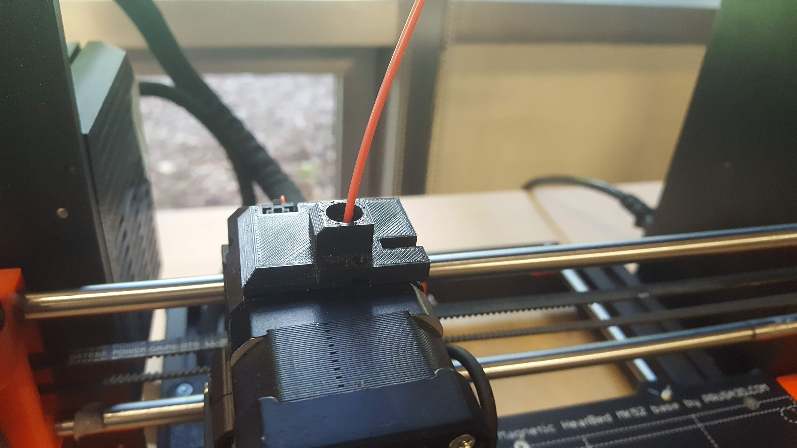
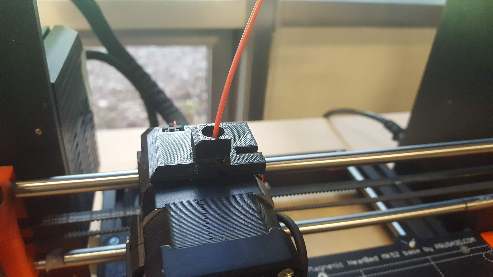

Using the Prusa & Prusa Slicer
Learning to use the Prusa itself is pretty simple, as once you've got the STL file you want to print, it's only a few steps to get it started. The first step is to import your STL file into Prusa SLicer, either by right clicking the file and selecting "open with Prusa Slicer," or opening the program and going to File->import and then selecting it from there.
Once you have your file in Slicer, there is a lot of stuff you cna do to manipulate how it prints. for the purposes of this overview, I'll only touch on the basic and most necessary skills. When in 3D editor view, you can move and rotate the various items on the build plate using the control bar on the left of the screen. The white column on the right is the print settings, and these are very important. In particular, supports are absolutely critical to the success of your print. There are four options. None, which, unsurprisingly, adds no supports. Everywhere, the opposite which adds support material to any overhang on the print. Build plate only, which will add supports to the model but only starting from the build plate, which makes removal much easier. And finally for support enforcers. This allows you to specify exactly where supports should be, by adding boxes to the 3D model view and labeling them as support enforcers. Anything in the box will have supports generated for it. The other print settings control infill (the amount the hollow space inside a print will be filled for support), as well as print scale, layer width, printer type, etc.
Once all the print settings are in order, hit the "Slice now" button at the bottom right of the window. This will load a preview of what the print will look like, with supports and everything included. You can use the slider on the right of the preview box to get a layer by layer breakdown of the print, as well as a preview of the time and material the print will use in the right column. When everything is set, you can click "export G-Code" to save the configuration for the print (if you have one of the printers' SD cards already plugged in, there will be a seperate, smaller button to export it right to it). Once the G-code is exported, you're ready to print!
Now that the file is all set, we can stick the SD card into the Prusa. But hold on! We have to make sure it's ready to go first! If there is no filament in the printer already, or you want to change the color, you can't just yank it out. To unload, turn the knob till the screen reaches the "unload filament" line. Select it, and the printer will heat up, notifying you when it's ready to unload the filament. When it is, it will push it out and you must pull it free. Remember to snip off the melted end of the filament as a courtesy to the next person! Loading filament is very similar, just wait for it to heat up, then when it says it's ready, press the button while feeding the new filament into the hole. You should feel it pulling on it. It will ask you if it is xtruding the correct color from the bottom, press no until it is, this may take a couple times. When that's done, all that's left to do is print the model! Go to the "print from SD" line, and select your file. The printer will start once it has heated up. Make sure the print bed is clear of any leftovers from previous prints before you start! Additionally, you must stay and watch your print for at least the first half-hour, this is when it is most likely to fail. If you see the print failing, stop it right away in order to prevent damage.

 
